| 传说中后羿使用射日弓射下太阳，在游戏中属于敏捷型的NPC装备长弓再适合不过了。尽管如此，就算是拿着长枪、甚至拿着阔剑也都显得架势非凡，而装备着弓或火枪类的武器，可以额外增加武器的攻击力。 |
| 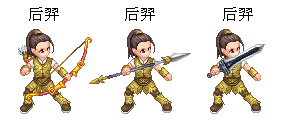 |
| 看似温柔婉约的竹取公主，手执武士刀和利爪虽然也深具威胁力。但因为智力和智慧较高的关系，手持法杖装备成法师型的伙伴是更佳的选择。 |
| 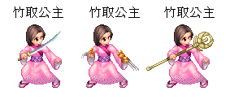 |
| 爱德华蒂奇，有着招牌的大胡子，而随身的弯刀也是他初登场所使用的武器。因为各项数值皆很平均，所以拿着西洋剑或短枪也都不是问题！ |
| 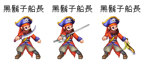 |
| 谜样的少女妮丝是天生的魔法师，您只要将她装备上魔法类的武器，施展起法术会让人不敢领教，拿着攻击力强大的火箭筒虽会降低速度，但对于本身敏捷就不高的妮丝，也不失是一个好策略。 |
| 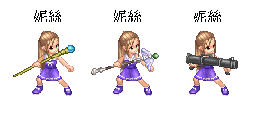 |
| 航海家麦哲伦因为各项数值都很平均的关系，初期使用何种武器较不需烦恼，除了用原先所配置的西洋剑外，搭配上火绳枪或现代步枪也是不错的选择。 |
| 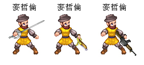 |
| 在幕府时代四处漂泊的浪人使用一把顺手的武器可是很重要的。例如装备上武士刀可以增加攻击力及防御力，换成利爪既可保有攻击力，同时还能提升敏捷，若你的浪人伙伴各项能力都不佳，使用火枪可以加上枪枝额外的攻击力，也是不错的作法。 |
| 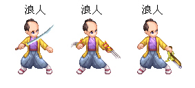 |
| 本身就是强壮的肉搏型战士，表现着护卫神殿的决心...利矛、狼牙棒、火箭筒装备在玛雅战士的身上，都是不错的选择。 |
| 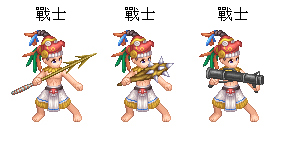 |
| 玛雅人由于敏捷性很高，装备上轻型的武器可将速度完全发挥，但若是装备斧头压低他的敏捷，会较易与玩家合击。 |
| 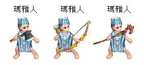 |
| 印度的阿育王因为原本各项数值皆很平均，能力也很强，搭配任何武器都能展现出阿育王不同的一面，配合造型特殊的武器，展现出他骁勇善战、文治武功皆盛的王者形象。 |
| 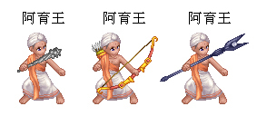 |
| 一样也是可以培养成各种类型的库克船长，要出海远航至澳洲当然随身的防御武器不可少��！除了库克船长原先配戴的短枪之外，西洋剑、弯刀也都非常的适合他。 |
| 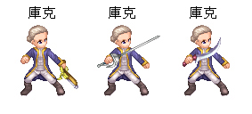 |
| 柔弱的小兰身手可是敏捷的很，使用魔法类的武器可以提升魔法攻击和防御力，装备上斧头可以提升她的攻击力，压低敏捷以方便练功，而使用弓箭最能够发挥她速度的优势，所以玩家可要仔细帮她挑选武器哦。 |
| 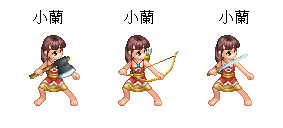 |
| 郑和配上西洋的魔杖和中式的法杖，立刻由宦官化身为法力高强的法师。 |
| 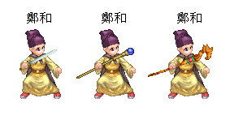 | |